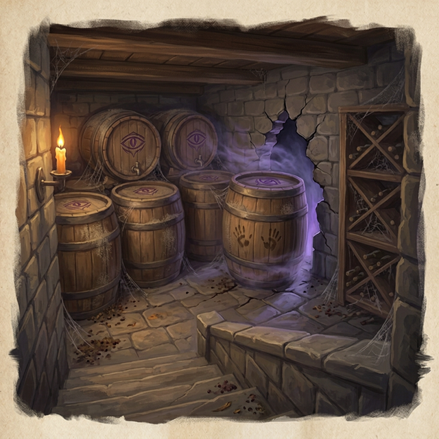
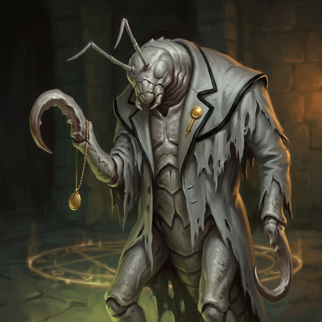
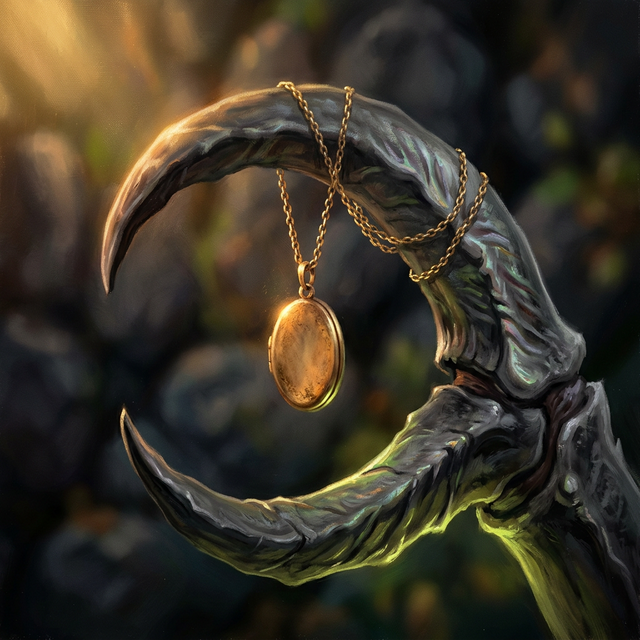
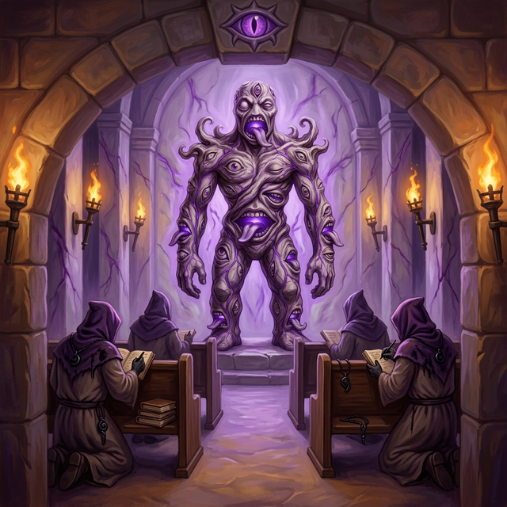
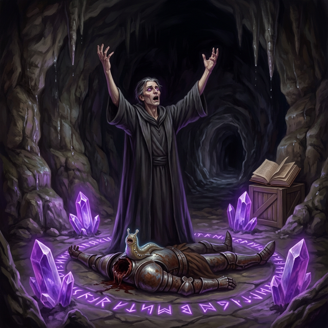
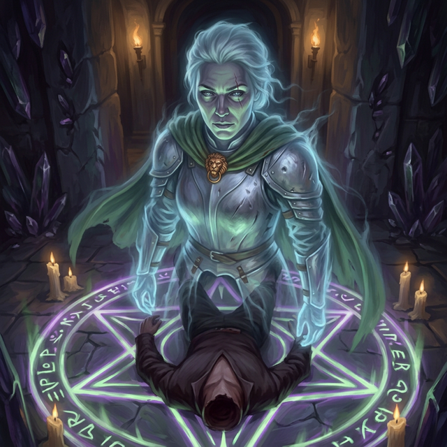
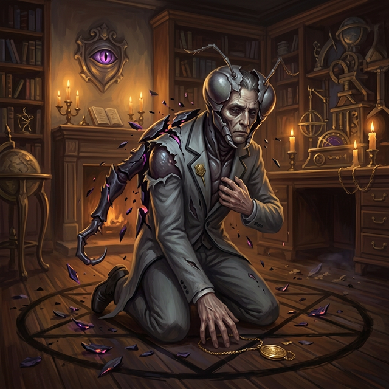
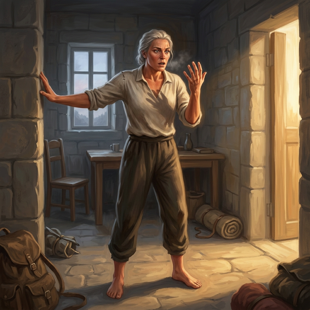

Session 6: Reach for the Stars — The Ritual
Date: March 20, 2026
Location: Delphi Mansion — Wine Cellar, Third Floor, Temple Caves, Ritual Room
Adventure: Reach for the Stars — The Ritual (Keys From The Golden Vault)
Previously...
The party cleared the ground floor of Delphi Mansion — mimic, slaad tadpoles, animated armor, and a gibbering mouther that Blood Feather killed while blinded. They experienced their first eldritch surge and reached the wine cellar, where an arcane-locked secret door blocked the way down. Elra pointed them to the third floor: "The butler. The thing with the hooks."
Session 5 Recap — Narrated
Act 1: The Wine Cellar
Elra Lionheart briefed the party in the wine cellar. The butler — Esquire — was once a man named Edmund. Loyal. Ran the house for years. Krokulmar transformed him into a hook horror. Eight feet of chitin and hooks. His locket was the key to the arcane-locked secret door.
“He has blindsight. Sixty feet. He doesn't see you — he feels you. Vibrations in the floor, heat, breath. The clicking is his sonar. Invisibility won't help.”
“The clicking... sometimes it sounds like he's trying to talk. If you mention Markos, or the household... he might listen. He might not. But he was a good man once.”

Scene Audio — The Wine Cellar
Act 2: Silent Crossing
D18 — the third-floor hall. Six stirges hung from the rafters like wet rags, wings folded, needle-beaks tucked. Sleeping. Blood Feather signed to the others: slow, single file, hug the wall.
Stealth rolls: Blood Feather 20, Slim 19, Kiara 15. All passed. Slim passed beneath a stirge two feet above his hat brim. The needle-beak twitched. Slim didn't breathe. The stirge settled. Kiara froze when one shifted on its perch — two seconds, three — then it folded its wings and went still.
The party crossed D18 without a sound. The stirges never woke.
The Butler
D19 — the Eldritch Observation Room. Esquire stood in the center of a divination circle. Eight feet tall. Tattered morning coat with the House Delphi service pin still on the lapel. The gold locket glinting on his right hook.

Slim: “Good evening.”
The clicking stopped. Esquire tilted his head — the butler's listening posture, preserved in chitin. He stepped aside. Not a retreat. The way a butler might when a guest says something unexpected at the door.
Blood Feather: “We are here to see the master of the house.”
Esquire's entire body changed. He presented himself — shoulders back, head level. The right hook rose slowly and extended toward the party. Not a strike. An offering. The gold locket dangled, waiting to be taken.

Blood Feather lifted the chain gently. Inside: a miniature portrait of Markos Delphi as a child, painted by Edmund the year Markos learned to read.
Blood Feather: “Thank you. Markos has chosen well in you.”
Esquire's clicking faltered — then steadied, slower, gentler. The tapping of a man at rest. He stepped back into the divination circle and folded his hooks across his chest. He would not follow. This is where the butler waits.
Zero combat. Full social resolution.
Act 3: The Temple Below
The locket opened the secret door. Below: temple caves. Four surviving cultists huddle against the walls — catatonic, purple-eyed. Three dead. A woman named Serina grabbed Slim's sleeve and whispered: “Don't go down there.”
The Krokulmar idol stood at the center of D24 — mouths and eyes sealed beneath the surface, humming at a frequency you feel in your molars. The tongues moved when you weren't looking.

On the cave floor, scratched into stone: “THE CRYSTALS ARE THE DOOR. BREAK THE CRYSTALS AND THE DOOR CLOSES.”
D25 — Storage
Four severed heads. Three headless bodies. Elra's team.
She named them. Jareth. Senna. Tomas. The fourth head was her own. She stared at her own dead face for a long time.
“I look tired.”
Then she counted the bodies. Three. Not four.
“Where is Gareth? There are three bodies. There should be four. Where is my husband?”
Scene Audio — D25 Discovery
Act 4: The Ritual
D27. Four purple crystals pulsed from the cave floor. Markos Delphi knelt at the rune circle, chanting in Deep Speech, eyes shifting between hazel and bruise-purple. In the center — a headless knight body in battered plate armor, with a slug-like Far Realm entity attached to the neck stump.
The Fragment of Krokulmar. Riding Gareth's corpse.

Elra saw the armor. The boar's-head clasp — the match to her lion's head, given on their wedding day.
“...Gareth? No. No, that's not— that THING on his neck— GET IT OFF HIM!”

The Fight
Round 1: Slim fired the wand of magic missiles — four bolts, 15 force damage. Crystal 4 destroyed. Kiara dual-rapier'd Crystal 3 — 13 damage across two strikes. Crystal 3 destroyed. Blood Feather hit the Fragment with a psychic blade for 9 damage (Fragment at 1 HP). Markos hit Kiara with a Psychic Orb for 10 damage — even on disadvantage.
Round 2: Slim's rapier with Genie's Wrath — thunder damage doubled against the crystal. Crystal 2 cracked. Kiara finished it — Crystal 2 destroyed. Blood Feather spoke to Markos: “Don't forget yourself. You have friends at home.” Then threw a psychic blade through the Fragment's largest mouth and out the back of its head.
The Fragment of Krokulmar is dead.
Kiara walked to the last crystal and drove her rapier through its center.
All four crystals destroyed. Best outcome achieved.
The Shockwave
The crystal positions discharged stored Far Realm energy. A shockwave of white light expanded through the cavern — not pain, something deeper. Something that reached into the architecture of the body and rewrote.
- Blood Feather: Psychic blades manifested unsummoned. New geometry — angles that shouldn't exist.
- Slim: The vulture screamed. The djinni patron recoiled — from recognition. The warlock bond sharpened.
- Kiara: Rapiers rang with harmonics. Time stuttered. Combat became visible as a pattern.
The lasting mark: a second heartbeat at an alien frequency. Not painful. Not unpleasant. Alien. It doesn't go away. Krokulmar has seen them.
Level 3 → Level 5.
Scene Audio — The Shockwave
Epilogue
Markos collapsed, crying, human again. Blood Feather secured the Celestial Codex and told him Vasil sent them to save him. “He sent people to save me?”
Blood Feather showed him the locket portrait. “Edmund painted this. The year I learned to read. I was going to be an astronomer.”
“How do you come back from this?”
“Take each step at a time to do good. Feeling bad means you're a good person.”

On the way out, D19: Edmund was human again. First instinct — straighten his collar. First words: “Is Markos alive?”
Five graves in the clearing where morning sun hits first. Elra said goodbye.
“You did good in there. Better than good. My team couldn't finish it. You did.”
“When the priests come... I'll be waiting.”

She didn't say goodbye. Soldiers don't. She just nodded — and the glow brightened, warm, almost alive — and then the morning light took her.
In Varkenbluff, Vasil embraced Markos. Took the Codex with trembling hands. Heard Elra's message: “Tell Vasil I don't blame him. I never did.”
“That makes it worse. That makes it so much worse.”
Session Stats
| Combats | 1 (Markos Ritual — best outcome) |
| Social Encounters | 1 (Esquire — zero combat) |
| Stealth | D18 stirge hall bypassed (20, 19, 15) |
| Deaths | 0 |
| Level | 3 → 5 |
| MVPs | Blood Feather (Fragment kill, Esquire diplomacy, Markos redemption) · Kiara (3 crystals) · Slim (first crystal, Genie's Wrath) |
| Loot | Wand of Magic Missiles, 550 gp/PC |
| NPCs Saved | Markos Delphi, Edmund/Esquire, Elra Lionheart |
Next Time...
The Golden Vault music box arrives the next morning. A prisoner in Revel's End — an arctic penitentiary at the edge of the world — has sent a coded message. Prisoner 13 was a Zhentarim spymaster. She claims to possess the key to something of great importance.
And behind the sternum, the alien heartbeat pulses — in time with something very, very far away.
“One step. Yeah. I can do that.”
— Markos Delphi